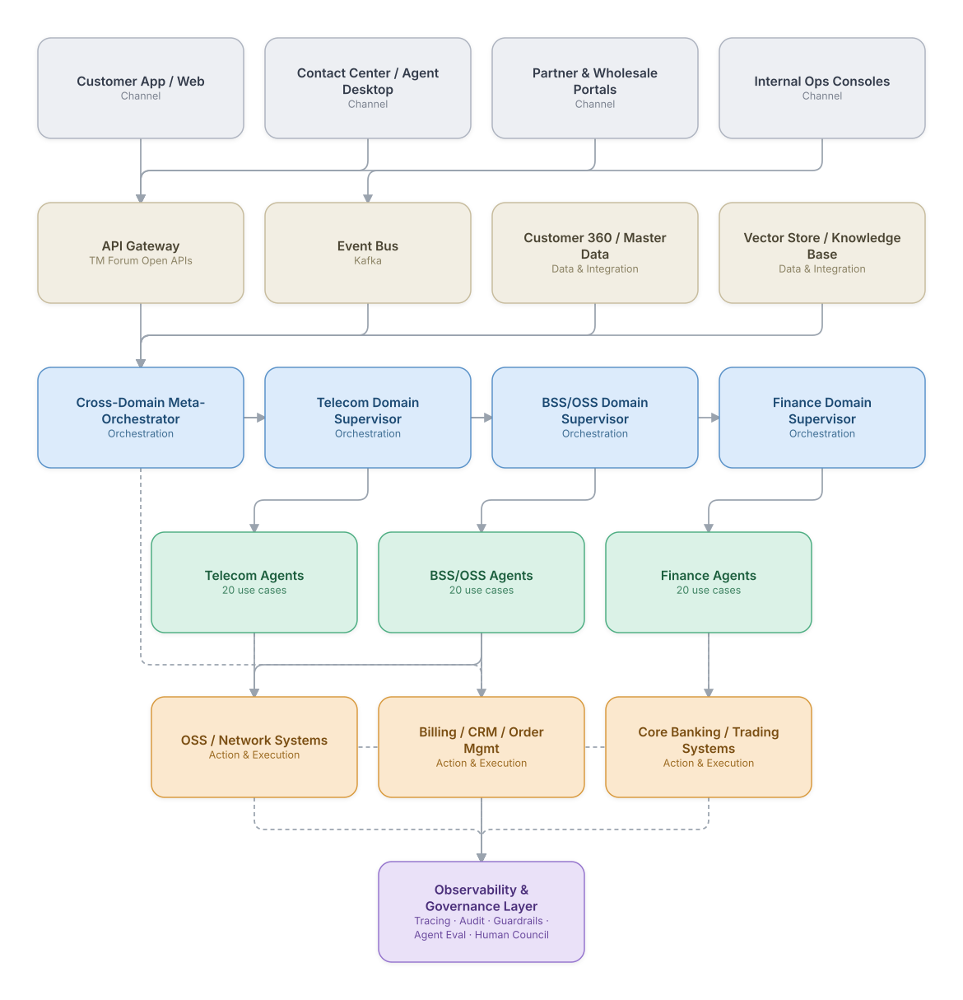
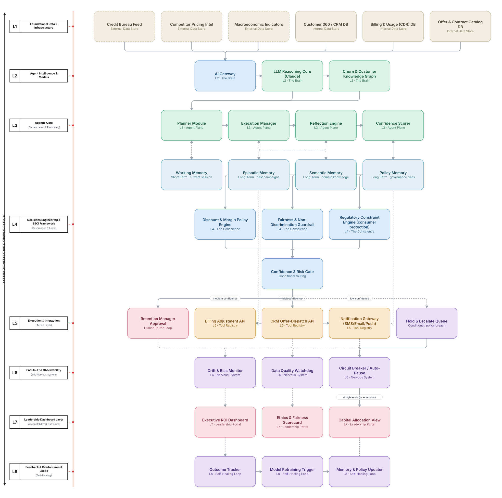
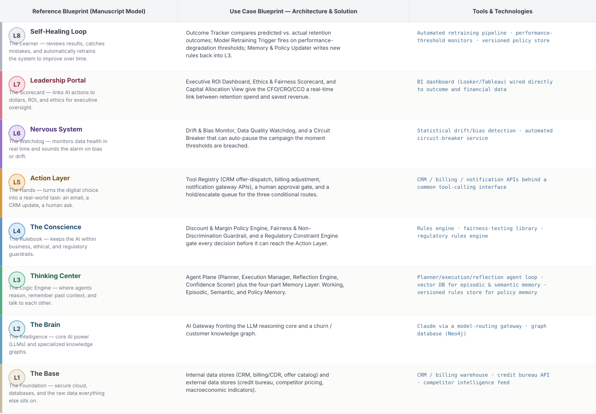

AI-Regenesis
AI-Regenesis
Try a pattern in the sidebar, or a term like fraud, billing, inventory, settlement.
Have your own use case?
Put it through the same engine. Structured form in, layered diagram and build order out — then download the engine as a skill and run it yourself.
Use case catalog
{{ resultCount }} of 60 use cases
{{ g.name }}
{{ g.count }} use casesTry a pattern chip, or a term like fraud, billing, inventory, settlement.
{{ c.title }}
Problem statement
{{ c.problem }}
Architecture
{{ c.diagramNote }}
Agents & sub-agents
L1 Foundational Data through L8 Feedback & Reinforcement Loops — governance gates, memory, observability, executive accountability and the regenerative loop, plus an agent-level tools stack and a build order by layer.
Technologies used, per step
Suggested build order
{{ b.body }}
If we rebuilt this: what would improve
{{ d8.title }}
The same problem mapped through the Integrated Decision Engineering Meta-Architecture — where the Quick Reference view shows one execution pattern, this shows the enterprise stack that pattern sits inside.
L1–L8 flow diagram
Left-margin layer labels, with the governed three-way conditional gate — auto-execute, human review, hold.
Reference blueprint
The framework's own reference model beside this use case's specific solution, layer by layer.
Reference architectures
These sit outside the 60-use-case catalog. Each shows how the pieces compose into a full system rather than one workflow.
E2E platform architecture
How channels, orchestration, the agent mesh, and observability/governance fit together across all three domains at once.

Decision Engineering Meta-Architecture
The 8-layer flagship reference — the Base, the Brain, the Agent Plane, the Conscience, the Tool Registry, the Nervous System, the Leadership Portal and the Self-Healing Loop — applied end to end to one high-stakes decision, with the AI Gateway, conditional routing, and internal/external data stores all made explicit.

Meta-architecture blueprint
The same eight layers as a reference model table — what each layer owns, and what it hands to the next.

Architecture patterns
Every diagram in the catalog uses the same layered visual language. Eight patterns cover all 60 use cases — pick by the shape of the problem, not the technology.
Best for: {{ p.best }}
Build your own
Describe your use case. The same engine behind the 60 catalog entries renders the diagram and the build order as you type. Free, no signup, nothing stored.
Suggested build order
{{ p.body }}
Skills & packs
Everything here is free right now. Each is a standalone folder — SKILL.md, scripts and references — that drops into Claude Code, Claude Cowork or your own Python environment. Each download is a real .zip, built in your browser from the live source.
Every skill was built, rendered and re-tested from its own packaged file before being listed. Each one's lessons-learned notes document the real issues found doing that.
Engine skills
Each card shows a real diagram this engine produced — the same output you get from your own spec.
Generates the Quick Reference view — a Mermaid + SVG diagram and a four-phase build order — for any of the 8 named patterns, from one compact spec.
The full L1–L8 view: labeled flow diagram, reference blueprint table and agent-level stack. This is the engine behind every Deep 8-Layer page in the catalog.
An audit tool, not a generation tool. 16 structured questions across the same L1–L8 framework, out comes a governance-style gap report with severity-ranked findings.
Combines a use case with real engagement details — client, price, timeframe — into client-ready proposal content. Never invents a price or a timeframe.
Vertical content packs
Pure data — the 20 use cases for one domain, Quick Reference and Deep 8-Layer specs, no engine code.
Network fault RCA, 5G slicing, fraud, churn and more. 18 of 20 currently have a matching Deep 8-Layer spec.
Order orchestration, revenue assurance, fallout recovery, mediation pipelines. Full 1:1 coverage across all 20.
AML/SAR filing, credit underwriting, algorithmic trading, KYC onboarding, robo-advisory. Full 1:1 coverage across all 20.
Pricing, checkout and licensed bundles are intentionally not built yet — that work is paused until download activity or direct inbound interest says it's worth building. If you'd use a paid tier of any of this, saying so is more useful to us right now than the pricing page would be.